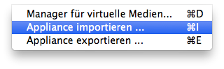

1. Download and Install VirtualBox and the VirtualBox Extension Pack.
2. Download the iDienstlerbox which is a ready to use GNU/Linux Debian 7.5 VirtualBox Appliance and import the iDienstlerbox into VirtualBox.
I suggest to change the Name to something that is easier to remember and to select the request of a new network address for your new virtual machine.
3. Start your new virtual machine, login with the following credentials:
iDienstlerbox v1.2.4 (user: root, password: i123123) SHA1: 9ea896aa214b157cf7c240fffce0875a2d39a7004. Open up a terminal and enter the following commands:
$dpkg --add-architecture i386 $apt-get update && apt-get dist-upgrade $apt-get install git openjdk-7-jdk $apt-get install ia32-libs
5. Select OpenJDK 7 to be the standard JDK on the system by entering the following command and then select the number which fits to OpenJDK 7:
$/usr/sbin/update-alternatives --config java
6. Download Maven 3.1.1 and unpack it somewhere on your local computer using:
tar zxvf apache-maven-3.1.1-bin.tar.gz
7. Add the bin directory of Maven to your PATH:
export M2_HOME="/root/Downloads/apache-maven-3.1.1" export PATH=$PATH:$M2_HOME/bin
8. Download of the Android SDK Tools and enter the following commands:
$cd ~/Dokumente/android-sdk-linux/tools $./android update sdk --no-ui --force --filter platform,platform-tools $android update sdk -u $android update sdk --no-ui --obsolete --force
9. Clone the 2 projects bitcoinj and bitcoin-wallet:
$cd ~/Dokumente $git clone https://github.com/machinecoin-project/bitcoinj $git clone https://github.com/machinecoin-project/bitcoin-wallet
10. Compile bitcoinj:
$cd ~/Dokumente/bitcoinj $mvn clean install -DskipTests
11. Create the checkpointfile
root@debian:~/Dokumente/bitcoinj/tools# mvn exec:java -Dexec.mainClass=com.google.bitcoin.tools.BuildCheckpoints
12. Download IntelliJ IDEA 13 Community Edition and unpack it. After you have done this open up a terminal and change with that terminal into the bin directory of IntelliJ IDEA 13 and start the "idea.sh" file:
$cd ~/Downloads/idea-IC-133.696/bin $./idea.sh
13. Import the wallet into IntelliJ IDEA 13 with a click on "Import Project".

Choose the pom.xml of the wallet and click on "OK".

In the next step just have a look at the settings and if they are okay click on "Next".

Also in the next step just click on "Next".

The OpenJDK 7 should be selected in this step. Have a look at the screenshot how the result should look like.

In the last step of the import choose a nice project name like "machinecoin-android-wallet" and also setup a project file location. Here I used "/root/Dokumente/machinecoin-android-wallet". Click on "Finish" if you are ready.

14. Now its time to do all the steps that are necessary to be able to compile the wallet for the very first time. At first lets have a look at the dashboard that you'll see right after the import. On the top right appears a message where you should click on "Enable Auto-Import".
Do a click on "Run" > "Edit Configurations..." in the Menu. In the next screen click on the "+" and choose "Maven".


In the tab "Parameters" set a name, the working directory and the entry for the command line.
In the tab "General" unselect "Use project settings", select "Override" for the Maven home directory and enter/select the path to your local Maven home directory.
In the "Runner" tab unselect "Use project settings" and click on the edit button for "Environment variables". After that insert a new entry into the environment variables with the Name ANDROID_HOME and as the value the path to your Android SDK for example /root/Downloads/android-sdk-linux/. Click on "OK" and again on "OK".
15. Prepare the signing of the app
Just click on "Build" > "Generate signed apk..." in the menu and create a new keystore under the key store path ~/.machinecoinkeystore/keystore.jks For the username use "android" and for the password "androidpassword".

16. Build the app
Just hit the "Build" button and you can upload the generated apk to your phone or an android emulator. Don't forget to allow the install of apps outside of the play store.

17. Further information
You should connect to nodes that uses a high value for the maxsendbuffer.
rpcuser=<rpcusername> rpcpassword=<rpcpassword> rpcport=40332 server=1 listen=1 daemon=1 gen=0 rpcallowip=127.0.0.1 disablewallet=1 maxconnections=500 #bloomfilter bloomfilters=1 #maxsendbuffer maxsendbuffer=256000 #maxreceivebuffer maxreceivebuffer=256000
{kind=link}
{kind=link}
{kind=link}
{kind=link}
{kind=link}
{kind=link}
{kind=link}